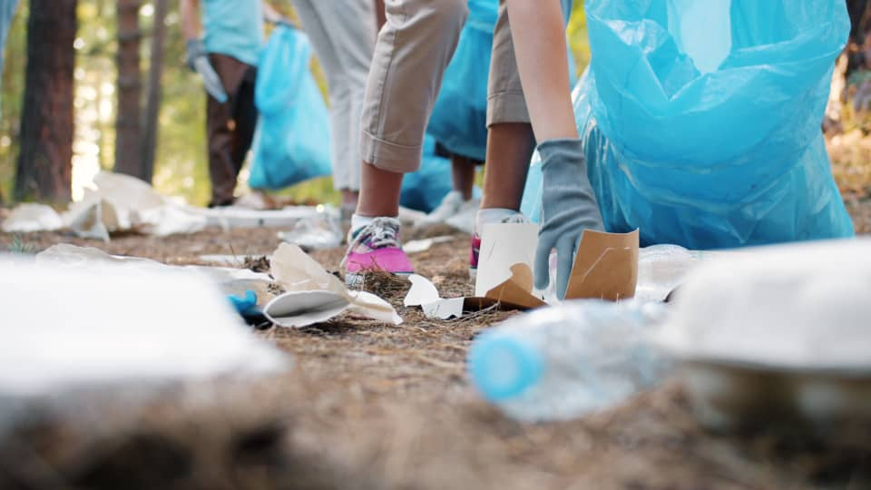
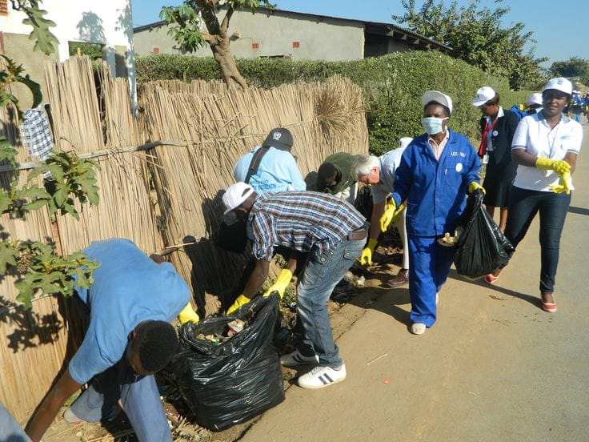
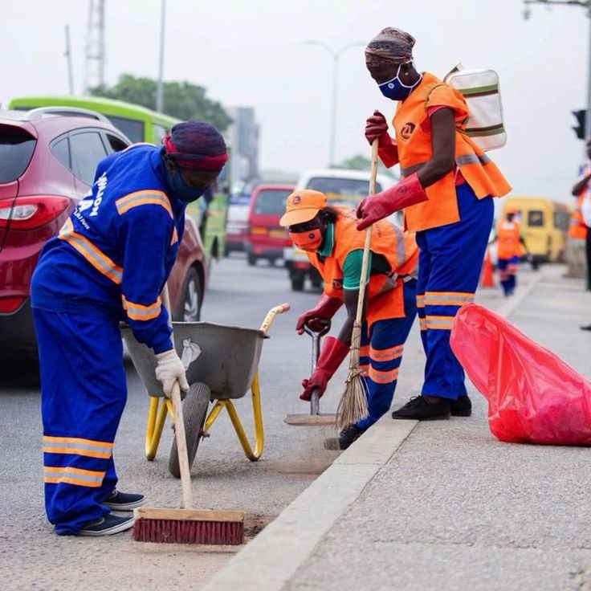
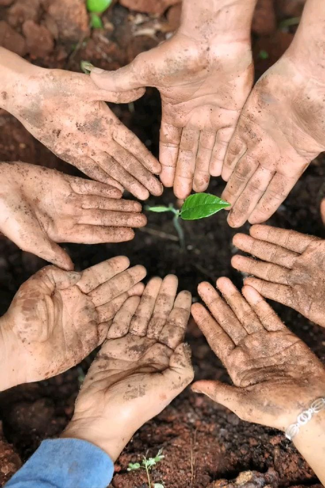

Sekondi Beach Clean-Up
Sekondi Beach Clean-Up Sorting at the Recycling Hub
Sorting at the Recycling Hub School Environment Lesson
School Environment Lesson Plastic-to-Product Workshop
Plastic-to-Product Workshop Roadside Clean-Up Crew
Roadside Clean-Up Crew Green Takoradi Tree Planting
Green Takoradi Tree Planting Market Drain Clean-Up
Market Drain Clean-Up
Community Litter Pick
Neighbourhood Clean-Up Waste Education Session
Waste Education Session
Street Sweep Day
Community Planting Circle